Princeton University Library, MS MS Taylor Medieval 11 ()
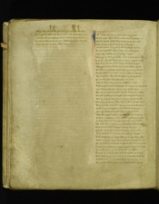Passus
One
IN Tiberius tyme þe trewe Emperoure
when Cesar hymseluyn was cesed in Rome
whils Pilat profest was vnder þe prince riche
4 (HL 4)And demed Iustyse of þe Iues londes
Erode vnder Emperoure als herytage wolde
Kynge of galile calde when þat criste dyed
þof Cesar sakles war þat oft syn hated
8 (HL 8)Thurgh Pilat pyned he was & putt on þe rode
A pilar phytgh was doune on þe playne erthe
His body bonden þerto & betyn with scourges
whyppes of wirebule vmbe his white sydes
12 (HL 12)To ałł on rede blode rann ؛ als rayne in þe strete
Sithen stoked on a stole with stiff men handes
Blyndefelde als a bee buffets hym raghten
If þou be profett of pryse profecy vs now
16 (HL 16)which beryn of þe borde buffett þe laste
A strange croune of thorne throngon on his heued
Vmkestyn with a cry and on crosse done
For ałł þe harmes þat he had hasted he noght
20 (HL 20)On þaim vylany to venge . þat his vaynes brasten
Bot ay taryed of þe tyme if þai turne wolde
And gaf þaim space þat hym spilt þof it spedde litiłł
Fourty wynter als I fynde and no lesse tyme
24 (HL 25)Tiłł it tid on a tyme þat Titus of Rome
þat ałł Gascoyne gat & gyen þe nobiłł
whilke noye neghed hym to in Nero tyme
He had a malady vnmeke in myddes þe face
28 (HL 31)þe lipp laye on a lumpe lyuerde on þe cheke
Als a kankyr vnclene . it clunchyd togedyr
Also his fleschely fader a ferly betyd
A byke of waspes bees bredde in his nese
32 (HL 35)þat hewen of his heued oft had he thoght
And waspasius was calde þe waspe bees after
was no leche apon lyue þese lordes couth help
Ne gresese growande to gayne for þair grime sores
36 (HL 45)Now of Natan to mene Naymes son of grece
þat orewent on þe see fra Cite to other
Knew countres fele and kyngedoms many
And was maryner myche & marchand bothe
40 (HL 49)Cytesens of surry sent hym to Rome
To þe hatiłł Emperoure an erand fra Iues
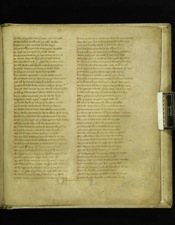Calde Nero be name þat þaim noye wroght
Of his tribut to tełł þat þai take wolde
44 (HL 53)Natan to Nero nomme on his waye
Ouer þe grekkys grounde on þe grym waghes
On hegh see þai sayle ouer þe salt water
with a dromonde on þe depe driwes ouer swyth
48 (HL 57)þe wynde wayned ouer and þe water bolnes
Cloudes claterd on loude als þai cleue sulde
þe rak with a rede wynde rofe on þe myddes
And sonn settes on þe see at þe southweste
52 (HL 61)It blew at þe brode see bolned vp faste
And Natan naymeson on þe north dryues
So þe waw and þe wynde on þe water meten
þat ałł horled on a hepe þat þe helme ӡemed
56 (HL 65)Natan fled for ferde vndirneth þe heche
Lete þe water and þe wynde wirke als þai lykyd
þe schipp schare opon schore schot fra Rome
To þe costes vncouth yerne on he hyes
60 (HL 69)Rappes on radly apon raggyd towris
þe brade sayle on a brayde brosten in two
þet on ende was þan towarde þe heuen
þe tother doune in þe depe . als he droune sulde
64 (HL 73)Ouer wilde wawes he went als he welt wolde
Strake ouer þe stremes thurgh stormes & wyndes
with mych anger at þe laste as oure lorde wolde
Ałł boune at a byr tiłł burdeus hauen
68 (HL 77)By þat war bernes at þe banke barons & knyghtes
And Ceteseyns of þe Cite selcouthe thoghtyn
þat euer barge or bote or beryn on lyfe
Vnparissed passed þe paryls war so many
72 (HL 81)þai tokyn hym to Titus for he þair tong knewe
And frayned how fer þe flode had hym wayned
Sir oute of surry . he sayde I am comen
To Nero sandisman sent . to þe senur?? of Rome
76 (HL 85)Fra Sisteus his seriaunt with certayne lettres
þat es Iustice and Iuge ouer þe Iues ałł
Me war leuer with þat lorde lenged þat I war
þan ałł þe golde on þe grounde þat euer god made
80 (HL 89)þe kynge into counseil called hym sone
Says . can þou any cure thurgh craft apon erth
To softyn þe grete sore þat sittes on my cheke
I sulde redely þe rewarde & to Rome sende
84 (HL 93)Natan nyckes hym with naye says he nane couthe
Bot war þou kyd in kyth þare as criste dyed
þare es a worthy wyfe a womman clene
þat has souerayne salue for alkyn sore
88 (HL 97)Now tełł me quod titus & þou sałł tyde þe better
what medycyn es maste þat þat may vses
whether gomm or grese or other gode drynkes
Or charme or chauntement I charge þe to saye
92 (HL 101)None of þese quod Natan bot now wiłł I tełł
þare was a lorde in oure lande whiles he lyf had
Proued for a prophet for his praysed dedes
And borne in Bedelem . of a byrde clene
96 (HL 105)And scho a mayden vnmerryd . þat neuer man touched
Als clene als þe clyff . þar cristałł sprynges
withouten hosbande helpe bot þe haly gaste
A kynge and a knafe childe consayued at hir ere
100 (HL 109)A takynnynge of þe trinite touchyd hir had
Thre persons in a place .proued togedir
Ilke grayne es god & a god bot ałł
Ałł thre er bot ane . als elders vs telles
104 (HL 113)þe first es þe fader . þat formyd was neuer
þe secunde es þe son of his syde growen
þe thred es in heuen with hym þe hegh halygaste
Nouther marked no made . bot men fra þaim passes
108 (HL 117)Ałł er þai endeles . and euen of a myght
Als sone was þe son . als þe selfe fader
þe halygast with þaim for soth had þai euer
þe secund person he sent was to þe erth
112 (HL 122)To take careman kynde of a clene mayden
So vnknawen he come . caytifs to helpe
& wroght wonders Inow . to he wa dreid
wyne of water he wroght at a woreden
116 (HL 126)Ten lazars at a loke leched he at ones
Pyned with þe palsy he put þaim to hele
þe dolwyn men fra þe dede ich day he raysed
Croked and kankerd couerde he ałł
120 (HL 130)Both þe domm & þe defe with his dere werkes
Dyd myracles ma . þan I in mynde hafe
þar es no counter ne clerke þat couth þaim ałł rede
Fyue . Mille . of folke was ferly to here
124 (HL 134)with twa fisches he fedd . & v . berly loues
& ich freke had his fiłł & yhitt was leued
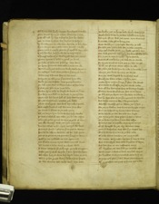Of brede and brokyn mete berelepes twelfe
þare seued hym of a sorte . seuenty . & mo
128 (HL 138)þose ałł tiłł hym his disciples has he chosen
þat to cites he sent his saghes to prechyn
Ay be two and be two his wordes to schewen
Hym seuyd of anothir sorte semely twelfe
132 (HL 142)Pore men & noght proude þat apostels war calde
& þaim he ches haly kyrke forto maynetyin
Thurgh vales of þe worlde þese war þair names
Petre Iames & Ioħn & Iacob þe ferth
136 (HL 146)þe fyfte of folouers Philipp was haten
þe sexte symond was calde & þe seuent eke
Bartilmew þat es boune breke wolde he neuer
þe aghtyn man was Mathew þat es mych loued
140 (HL 150)Tade and Thomas here er ten euen
Andrew þe elleuent þat auntred hym ofte
Befor princes to preche was petres brothir
þe last man was vnlele & lethir of his dedes
144 (HL 154)Iudas þat to þe Iues salde
Sithen hymselfe he sloghe for sorow of þat dede
His body on a blak tre he brast in þe myddes
when crist had heryd hełł ałł haly was turnyd
148 (HL 158)For þat cursyd man ؛ Matheu þai chesed
yhitt vnbaptist was both Barnabe & Paule
And noght knew of crist bot come sone after'
þe princes & prelates at þe pase tyme
152 (HL 162)Ałł þai hatyd hym harde for his haly werkes
It was a dolefułł dede when þai his dede castyn
Thurgh pilat pyned he was þe profest of Rome
þat ilke worthy wyfe þat I are neuende
156 (HL 166)Has his visage in hir vayle vernyk sho hight
Pryntyd priuely & playne . þat no poynt wantyd
For luf he lefte it with hir ałł hir lyfe tyme
þar es no gomme on þis grounde þat is grym wounded
160 (HL 170)Meselry ne myschefe na man opon erth
þat kneles doune to þat cloth & on crist leues
Ałł hurtes it heles within a handwhile
A Rome renayed quod þe kynge . þe riche Emperoure
164 (HL 174)Cesar þat synfułł wryche þat sent hym fra Rome
whithen had þai bene law layde vnder þe erth
when pilat prouest was þat siche a prince Iuged
Or thre woredes war wele won to þe ende
168 (HL 178)þe kankyr þat þe kynge hadd clenly was heled
withouten faute in þe face in flesch or in hyde
Als new als þe web þat neuer was wemmed
A curtase criste quod þe kynge þan
172 (HL 182)was werke þat I wroght worthy þe tiłł
Na dede þat I done hafe bot þi dede menyde
No neuer saghe þe in sight god son dere
Bot now graunte me my bone blissed louerde
176 (HL 186)Sir Nero to noye & new hym sorow
And I busk and boune þaim bale forto wirke
To do þat deuel on daw and þi dede venge
Tełł me quod titus what takyn he lefte
180 (HL 190)To þaim þat knew hym for criste & his crafte leuyd
Neuyn þou trinite . be name as thryse
And þarwith baptist be ؛ in blissed water
Forth þai fetten a fatt & fyllyn þare
184 (HL 194)Made hym cristyn kynge . þat after criste serued
Currours to ich coste þai þair course made
And ałł his barnayge sone to burdeux broght
Sithen with sanedisman sent vnto Rome
188 (HL 198)þe sely and þe fayre cure his fader to schew
And he was glad of þat grace & gretely he thanked
And loude criand to criste & karpand sayde
whethir worthly god in wham þat I leue
192 (HL 202)Als þou in bedlem was borne of a bryght mayde
Send me helpe of my hurte & here I avoue
To be dede for þi dede bot it be dere boght
þat tyme Peter was pape & preched in Rome
196 (HL 206)Of þe lawe & þe lare þat oure lede askys
Fylowyd fast of þe folke & to þe fayth turnyd
Crist wroght for þat wy wonders many
þareof waspasian was war þat þe waspes had
200 (HL 210)Sone he sendes hym to & he þe soth tolde
Of criste and þe curecheue þat cured þe seke
Als Natan Naymeson had done þat Nero to come
And to counsayle was called knyghtes of Rome
204 (HL 214)And sent sone on one messengers mony
xxti knyghtes þat war kydd þe curechefe after
withouten tribute or trew tenefułł wayes
þe knyghtes with þe curechefe come belyue
208 (HL 219)þe pape gaf pardon þerto & went þare ogayne
with pression and prese of princes and dukes
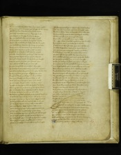when þe womman was war þat þe wede aght
Of saynte Petre þe pape þare plaght sho hir doune
212 (HL 223)vmfoldes his fete and to þe freke sayde
þis haly curechefe and I þi kepynge es In
þan begann þe beryn bitterly to wepe
For þe dolefułł dede of his dere mayster
216 (HL 227)& longe stode in a stede or he stynte wolde
when sho vnclosed þe cloth þat crist forwroght
þe wede fra þe woman he wapp at þe laste
Receyued it with reuerence & rynnand teres
220 (HL 231)To þe place with þe prese passed on faste
& ay held it on heght þat ałł byhalde myght
Twelfe Barons bolde þe Emperour bad wende
And þe pape departid fra þe peple swythe
224 (HL 235)Vernyk and þe vayle waspasian þai broght
& saynt Petre þe pope þat presaunt bare
Bot a ferly befełł befor þa ledes ałł
In þair temple betid tenefułł thynges
228 (HL 239)Mahoune & þe Mawmettry molt ałł to pouder
And ałł tocrached als þe cloth thurgh þe kyrke ӡode
Into þe palace þe pope with þe prince ӡede
knyghtes kepes þe clathe & on knes falles
232 (HL 243)Ane ayre flaghe þar fra þai felyd it ałł
was neuer odur ne ayre opon erth swetter
þe curechefe clensed itselfe & so clere wex
Myght no lede þaron loke for lyght þat it keste
236 (HL 247)Als it aproched to þe prince he putt vp his heued
For comforthe of þe clath he cryes on loude
Lo lordes he sayde þe liknes of criste
For wham my bote now I byde for his bitter woundes
240 (HL 252)with loude dole and with dynn ałł of hym one
þe pape vayled þe vayle & his visage touched
þe body sithen ałł aboute & blissed it thryse
þe waspes wytes away & ałł þe wa after
244 (HL 256)þat are laythir was lighter was neuer
þare was pypynge & play departyng of stryfe
ӡoledynge grace to god many grete lorde
þat curechefe vp in þe ayre fra þaim ałł hanged
248 (HL 260)þe symple peple myght see to þe soper tyme
þe vernykyłł after vernyk waspasian it called
Gert gayly it gyse in golde and in siluer
yhitt es þe visage in vayle als verynk it broght
252 (HL 264)þe Romayns teldys it Rome & for Relyk haldes
þat wonke Nero had noy and na nyght reste
For his tribute was vntane as Natan talde had
He somonde kynges to com counsayle to halde
256 (HL 268)Ereles and ałł menn þe Emperour aboutyn
He sembled þe senatours sone aponn haste
To Iugge what Iues best myght ·̒on þe Iues be takyn
And demed be dome ·̒þe dukes forto wende
260 (HL 272)þat war curyd thurgh criste ·̒þat þai on crosse slyuyg N
þe tane Nwaspasian was ·̒of þe wyes twyne
þat þe trauayle vndertoke & Titus þe tother
A bolde beryn on a blonke & of his body comen
264 (HL 276)No ferr syb fra hymselfe .bot his awen sonne
Crouned kynges war þai both & myche criste lufed
Of his grace gretely þat þaim of grame broght
Moste þai haldyn in hert þair hetes to kepyn
268 (HL 280)And þarre forwarde to fułłfiłł þat þai before made
þan was roghtlynge in Rome rubbyng of brynys
Schymbrynge of sharp stele scheledes dressen
Laght leue at þe lorde & rayled þarr signe
272 (HL 284)A grete dragon ałł of golde & ałł þe gomes after
Be þat schippes war shoryd & schot into þe see
Taclid and atyred on tolterande waghes
Freshe water & wyne wondyn in sone
276 (HL 288)And stufed with alkyn store þat þaim strenght sulde
þar was floynes in þe flode farcostes many
Cogges and crayers castelde ałł
And gales of grete strenght with goldyn fanes
280 (HL 292)Brayde ouer þe brade see aboute . v . myle
þai tokyn vp topsayle when tydes ?????
Had bir on þe bak & þe ????? latchyn
Soght ouer þe sa? ??? ??? ????ours many
284 (HL 296)Rafe vp at ?? port Iaf in þe Iues lande
Surry Cesar lond þou may sygh euer
Mikełł wo monn þe be wroght in walled tounes
Cites vnder syon now es ӡoure sorow here
288 (HL 300)þe dede of dereworth crist dere mon be ӡoldenn
Now es bedelem þi bost broght tiłł an ende
Ierusalem & Ierico forIugged wriches
Sałł neuer kynge of ӡoure kynde with croune be anoynt
292 (HL 304)Ne in þe for sake iouke in more
Passus
Two
Apon surry þai setyn in hegӡd withIn
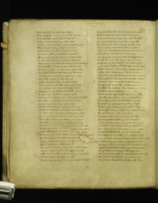Brynt ay þe bak & fułł bare leftyn
was noght bot raryng in þe riche townes
296 (HL 308)And rade fułł raschely ałł þe land ouer
Takyn toures & townes teldes fele
Brustyn ӡates of brasse mony burgh wonnyn
Ałł þe haythen here þai hew to þe dede
300 (HL 312)Both on bent & in burgh þat abyde wolde
þe Iues to Ierusalem þare Iosaphus dwellid
Flowyn als þe foule þat faucoun walde strike
A cites vnder syon þat sett was fułł fayre
304 (HL 316)with many torrettes and toures þe toune to defende
Mony swilke at þat swynge to þe swerde ӡode
For penys passed þare none if þai paye wolde
Bot did þaim ałł to þe dede & draue þaim ałł doune
308 (HL 324)with gynnes to Ierusalem þar Iues wer comyn
Sett sadly a sege þe Cite abouten
Pight pauylions done of palen wyse
with rapes of rede silke raysed vp swythe
312 (HL 328)Grete tentes als a toune of turkys clothes
Chipper on þair chiftane charebokles stones
A gaye egyl of golde on a gaye apiłł
with grete dragons & grym ałł in golde wroght
316 (HL 332)And lyke to lyons also liggand þarvnder
Palyd & paynted þe pauylyon was
Stokyn fułł of storys & steynyd with armes
Sithen bretest aboute bright to beholde
320 (HL 339)Or ałł þe sege was sett ӡitt fra þe Cite come
Mene messengeres made fra men of þe law
To þe chefe chiftane þai chosyn þair waye
Did mekely be mauth þair messages at anes
324 (HL 343)þai sayde to þe Ce?? he vs sent to serche ӡour wiłł
To here cause of ӡoure com & what ӡe couet here
wald waspasyan no worde to þase wyes schew
Bot sent þe sawdan agayne with . xij . sik knyghtes
328 (HL 347)He charged þam forto gange & þe gomes tełł
þat ałł þe cause of his comyng was crist forto venge
Say þat I byd þam þe bisshopes ałł
Tomorne or vnderne of þe daye vncled & nakyd
332 (HL 351)vp þair ӡates to ӡelde with ӡeredes in honde
Iche wy in a whyte serke withouten wede othire
Iues for Iuggement to take
And brynge Cayphas þat crist thurgh counseil betrayde
336 (HL 355)Or to þe walles sałł I wende & walt ałł vnder
Sałł no stone opon stone stande be I pas
þese sonedismenn on a sopp to þe Cite wenten
þare þe lordes of þe londe lent war ałł
340 (HL 359)Tyte talde þair tale & wondir thoght many
Of þat Cayphas cursed was .þat he com sulde
when þere knyghtes to carpyn þus begunon
Iues toke þaim tite withouten tale more
344 (HL 363)þair handes byndes at þair bak with birdyn staues
& of flowen þair fax & þaire faire beredes
Nackynde þaim als a nediłł to þe nether hyde
þair visage blekkyn with blek & ałł þe bodye after
348 (HL 367)Sithen knytted a corde to iche a knyght swyre
A ches & þam charged þair chefetann to bere
Say vnbuxom haf we bene at his byddyng ӡitt
And noght dredes his dome his dede hafe we he???
352 (HL 382)Tomorne prime or it pass þai putt it no ferr
It sałł sattiłł on þiselfe þe sothe as þou says
þus haf we certified to say & sendes þe þis chese
welland wode waspasian w?? þan
356 (HL 386)Layde wache to þe wałł warnyd in haste
þat ałł maner of men on þe morne sulden
Sone after þe sonn be sembled in þe felde
He strake vp a standard on a sture wyse
360 (HL 390)Bellyd als a berfray & britfułł of wapyn
when oght faled þe folke þat to þe fight langed
At þat berfray to be betyd sone
A dragon was dressed & drawen on lofte
364 (HL 394)wyde gapand of golde gomes to swalow
with aroues armyd in þe mauth & also he had
A fachoun vnder his fete with foure kene blades
þareof þe poyntes war pyght in partys foure
368 (HL 398)Of þese wankyłł folke þer þai war funden
In furbissynge of þe folke þar þe fachon hanges
þat þai haue wonnon with swerde ałł þe world riche
A bałł of brynand golde þe best was on sett
372 (HL 402)His tayle trayles þarvnder þat turne sulde þai neuer
when he was lyfted on lofte þar þe lorde weryd
Bot ay loked onn þe londe to ałł laght wer
þarby þe Cite myght se na saghtelyng wald ryse
376 (HL 406)Na na trete of trew bot þe toune ӡelde
Or ryd on þe Romans for þai haue rede tane
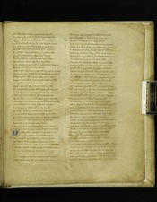þare bryttynd to be or þe burgh wynn
Bretist bigly aboute þe berfray was þan
380 (HL 414)with a tenefułł turne þat ouer þe toune glayde
þe beste be his brightnes þe beryns myght knaw
On iche a pomyl was pight pencels hee
Of silke & selcouth werke & syluer in betyn
384 (HL 419)It gliterde als þe glede on þe golde riche
Ouer ałł þe Cite to see als þe sonn bemes
Befor þe foure ӡates he fourmed to bige
Sextene Mille some whils þe sege lasted
388 (HL 423)Sett wardes at þe wałł þat noght away schapid
Sex Mille in a sopp þe Cite aboute
was noght whils þe nyght last bot neyng of stedes
Strougelynge of stele wedes stuffynge of helmes
392 (HL 427)Armynge of olifauntes & othir grete bestes
Agayne þe cristen to com with castełł on bakkes
waspasian in stele wede & his wyes ałł
was dight by daye & dryuen tiłł þe vale
396 (HL 431)Of Iosaphath þar sałł Iuggen ałł thynges
And bigly bataylde hym þare to byde þase other
varward Titus toke to tełł ӡow forsothe
with sextene Mille saudeours assigned to hymselfe
400 (HL 435)Als many in þe mydwarde was merked to lenge
þare waspasian was with princes & dukes
& sexty Mille in þe thrid with a trew knyght
Sir sabyn of surry a siker man of armes
404 (HL 439)þat prince was of prouynce & myche pople had
Fouretene hundreth in here with helmes to schew
And ten Mille in tale was at þe tent lefte
Hors & harnes fra harmes to kepe
408 (HL 443)Bot þe bemes in þe burgh blowen on loude
& banars beande þam forthe bliss vs oure lorde
Passus
Three
þen assembled war sone & of þe Cite come
A . C . Mille on hors in hawberks arayed
412 (HL 447)withouten folk oponn fote at þe foure ӡates
þat prised oute at þe place with paues in hand
Fyue and twenty olifauntes defensables bestes
with brade castels on bak out of þe burgh comen
416 (HL 451)And on iche olyfaunte armed men many
þai drafe oute dromundares deuely thik
A . C . houshid & hyled in herneys of mayle
Iche best with a big toure þar bold men were
420 (HL 456)Twenty talde be tale in iche toure euenn
Camyls closed in stele a ferly noumbre
Busked to batayle & on bak hadyn
Iche one a turret of tree with ten men of armes
424 (HL 461)Cheppid fułł of chose men & chareged with wapyn
A wonder noumbre þer was whoso wiłł lysten
And many doghty þat daye þat dred was neuer
Fay fondon in þe felde be þat þe fight ended
428 (HL 465)Ane olifaunte armed come opon lofte
Couyrde with a castiłł þat craftely was wroght
A tabernacle in þe toure atyred was riche
Pight als a pauylӡon . xxx . pilars of siluer
432 (HL NaN)& foure graynes of golde with brynnand seregese
þe chekes of þe chayer war charebucle fyne
Couerd with a riche cloth þare Cayphas was sett
A plater of polist golde prest on his breste
436 (HL 476)with many grete pilar & precious stones
þe lerd men of þe law þat loude couthe synge
with sawtres sityn hym by & þe psalmes talden
Of doghty dauid þe kynge & other dere storyes
440 (HL 480)Of Ioseph þat noble Ioue & Iudas þe knyght
Cayphas oute of a kyste kepped a rołł
Redd how þe folke ran ouer þe brade water
when pharao & his folke was drouned in þe flode
444 (HL 484)And myche of Moyses law menyd þat tyme
when þe faþles folke was in felde comen
& batelde after þe bent with many beryn kene
For banars & bemes & bestes enarmed
448 (HL 488)Might na man se thurgh þe soyle þe Cite to knaw
waspasian deusyis þe vale ałł aboute
þat was with banars brade to þe burgh ӡates
So barons & bolde men þat hym aboute war
452 (HL 492)He sayde lordes in land ·̒lystyn my speche
Here es kynge ne knyght commenn to þis place
Baron? ne bachelere ne beren þat me folous
þat of his come es criste forto venge
456 (HL 496)Apon cause þis faythles folke þat hym falsly slowen
Beholdes to þe hethyn & to þe herte wendes
þe byndynge & þe betynge þat he on body had
Lat noght þis laules ledes laghe at his harmes
460 (HL 500)þat dere boght vs fra bale with blode of his hert
I qwytclayme þe querełł of ałł þe qwyk beryns
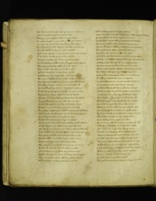And clayme on eueriche a kynge saue on crist one
þat þis pople to pyne no pite had
464 (HL 504)Als prouys þe passyon who þe pase redes
It nedes noght in þis note Nero to mene
Ne to tret of na trew for tribut þat he askys
Hys querel I quiteclayme whether he wenes
468 (HL 508)Of þese rebełł to Rome reson to hafe
Bot more thyng in my mynde moues me todaye
þat be Resonn to Rome þe realte falles
Both þe myght & þe mayn maystri & other
472 (HL 512)And lordeschip of ilke londe þat ligges vnder heuen
Lat neuer þis fayles folke of vs to wynn
Hors ne harnays bot þai it harde bye
Plates ne pysan ne pendande hende
476 (HL 516)whiles any lyfe may laste or we lyf maye
For þai er faynt of þe faythe & fals of beleue
Nouther grounded in god nor in his grace traysten
Bot ałł in storys of store & in strenght ouer
480 (HL 521)And we be dyghtyn today dryghtyn to serue
Hegħ heuen kynge has hight vs oure mede
Ledys louyd hym also & on loude sayde
Todaye þat flees a fote þe fende haue his saule
484 (HL 525)Bemes blowen on one blonkes to nye
Stedes stampes in þe felde stith stele vnder
Sithen in þair stiraps þai striden on lofte
Knyghtes crossed þaimselfe & tachid þair helmes
488 (HL 529)with loude clarions þai crye & with cormus pypes
Tymberes & taburris tutiłł þai hye
Lachyn launces on one lepyn togeder
Als fyre oute of þe flyntstane ferde þai betwene
492 (HL 535)Duste dryuen on lofte & dymmyd abouten
Als thonour in a thik rayne & thrymbland schoures
Beryns borne er thurgh brysten þair launces
Knyghtes croschid doune to þe colde erthe
496 (HL 539)Faght faste in þe felde & ay þe fals vnder
Titus tornes þaim to & tolles of þe beste
ForIusted of þe Iolyest for Iunynge of were
Sithen with a bright brande betis on faste
500 (HL 544)þat þe brayne & þe blode on þe bent rann
Soght thurgh þair sydes with many sad wapyn
Bet on þe broune stele whils þe blade lasten
Ałł bryghtyn þe bent als bemes of son
504 (HL 550)Ałł of gilten gere & of gode stones
what for schyuerynge of sheledes & shynyng of helmes
It fore als þe firment apon fire were
waspasian in þe vale þe vauarde behaldes
508 (HL 554)How þe hethynn here heledes to grounde
Come with a fayre felde þe folke forto maynteine
Als þe grimly griffons girde þai sammen
Spakly þair speres on sprotes ӡetyn
512 (HL 558)Scheledes als schydenwod on sholders þai cleue
Schokyn out of þair schetes þat scharpe war gronden
Mallen metal thurgh with vnmaght hertes
Bankes weren on blode aboute in þe vale
516 (HL 564)Blode oute of golde clathes als gutters þai rynn
Sir sabyn sett hym vp when it so ӡode
Rides with a rerewarde & ałł þe route foloues
Kenely þe castels he come to assayle
520 (HL 573)Castels claterd þai doune camels brestyn
Dromedares to þe deth drouen swithe
þe blode fomed þaim fro in slowes aboute
þat kene depe in þe dale daschen doune stedes
524 (HL 577)þe beryns in þe bretage þat aboute were
For þe duste & þe dynn as ałł doune ӡede
Ałł forstopped in stele starke blynde waxen
None lefte opon lyfe þat on lofte stode
528 (HL 583)Saue anely ane olifaunt at þe grete ӡate
þar as Cayphas þe clerke in castełł rydes
He se þe wrake on þaim vendes & away turnes
with twelfe maystres ma of moyses law
532 (HL 587)A . C . helmed men hyed þaim after
Or þai in þe castełł come þai cached þaim ałł
Bandyd þe bischop on a bytchid wyse
þat blode oute brast iche a bande vnder
536 (HL 591)Broght to þe berfray ałł þe bolde clerkes
whare þe standarde stode & stedde þaim þare
þe beste of þe bretage & ałł þe bright gere
Chayers & chaunlabres & scharbokiłł stones
540 (HL 595)Rolles þat þai red on & ałł þair riche bokes
þai broght forth þe bisshop þof hym bale thoghten
Felles þe fals þat ferd als þai fle walden
A . C . in þat haste with his hande one
544 (HL 601)þe fals Iues in þe felde so thik
Als hayle frawarde þe heuen in hepes ouer other
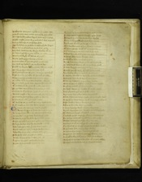Multitude was þare myche on þe molde lefte
þare so many war morte meruayle war elles
548 (HL 612)So criste his knyghtes kepynn to complyn tyme
Might noght þaire brayne bresten better was neuer
A . C . Mille helmes on þe hethen syde
war forfallenn in þe felde & noght a freke shapid
552 (HL 615)Saue . vij . Mille of þe same to þe Cite ӡode
And wann with myche wo þe walles withIn
þe ledys lightely on one lokked þe ӡate
Barryd þaim bigly with boltes of yryn
556 (HL 619)Brayde vp brigges & berres & chenes
þe portculas with pynnes perched þe grounde
þai wan vp lightely þe walles to kepe
Frescħ vnfanded folke & grete defence made
560 (HL 623)þai titt into þe toure tunnys thyk
with grete stones of gete & of graye marebull
Keped kyndely þe caste with kyrnels on lofte
whappes doune querels be quarters many
564 (HL 627)þe tother folke at þe fote freschely assayles
To ich a dale with dewe was dankyd aboute
withdrawes þaim for þe derke dukes and other
For þe caste was so kene þat come fra þe wall
568 (HL 631)Come forth with þe kynge ryght als þai forth ӡodyn
wantid noght a wy no none þat wounde had
Prynces to þaire palace passed on swythe
vnarmed þaim ałł & þe nyght restes
572 (HL 635)with waches att þe wałł to many wyfe sorow
wiłł noght þe haythen here þus harmles be lefte
Passus
Four
Onone als rede day rose on þe sky
Bemes blewen on brode berenes to rayse
576 (HL 639)þe kynge comaunde a cry þat counsayle was
þe dede bodes to þe bent bare forto make
To spoyle þe spilte folke spare sulde nane
Getyn gyrdels & gay gere golde & gode stones
580 (HL 644)Helmys hewen of golde hauberke nobiłł
Keste dede opon dede þat dole was to holde
wayes made þai wyde & to þe walles come
Assembled at þe Cite asawte to begyn
584 (HL 648)Folke ferly thik at þe foure ӡates
Braste toures of tre & tokyn þaim ałł
Aӡayne euer a ӡate ӡarkynde þai hye
Began at þe grettest a garet to rere
588 (HL 652)Graythid vp fra þe grounde of . xij . grete postes
It was wonder wyde & wroght apon heght
Foure . C . on frounte faght on þe walles
Hardy menn apon heght hyed at þe greces
592 (HL 656)And began with a bir þe burgħ to asayle
Quarles flaumand of fyre flowen in herde
with arous egrely with atter enuenymbe
þai taysed at þe toures & tachid þe Iues
596 (HL 660)Thurgh kyrnels cachyn þai dede many kene mann
Brayded & bett doune bretage thik
Brast ałł þe belde & þe brode toures
Be þat was many beryn þe burgħ to assayle
600 (HL 664)þe hole batełł bouned aboute þe brode wałł
þat was byggyd and bichid to wynn
wonder es to beholde with hołł dykes vnder
Hye banked aboune apon foure halues
604 (HL 668)& wonder wicked to wynn bot if wyles helped
Bowmen to þe bank bended þaire gere
Schot vp scharpely at þe schene walles
with arowes & alblastere & ałł þat harme myght
608 (HL 672)To affray þe folke þat defence made
þe Iues weryn þe walles with wyles Inogħ
Hote playand pyk at þe folke ӡettes
Brynnand lede & burnstane barels fułł
612 (HL 676)Schot schynand doune ryght als þe bright water
waspasian went fra þe wałł weryand þam harde
Other busken & boune benden engynes
Kestyn at kyrnels closterde toures
616 (HL 680)& many dere day werke dongon to grounde
Be þat wryghtes has wroght wonder strange pale
Ałł aboute þe burgħ with bastels many
þat na freke myght vmfonge withoutenn fele harmes
620 (HL 684)Ne no sege vnder sonn myght fra þe Cite passe
Sithenn demmyd þe diche with þe dede cors
Crommyd it with caryenn þe kyrnels vnder
þat þe stynk of þat stewe myght stryke ouer þe wałł
624 (HL 688)To þe cursed folke þat þai kepe wolde
þe cours of þe condyt þat come to þe toune
Stoppid euerich a strande ӡare any streme ӡede
Both with stokkes & with stones & stynkand bestes
628 (HL 693)waspasiann turnes to his tent with titus & other
Comande counsayle on one on cayphas to sitt
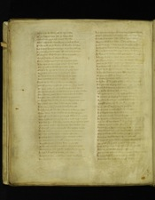what dede be dome þat he dye sulde
with þe letterd ledes þat þe lawe had
632 (HL 697)Domesmenn oponn dese demed swythe
whenn iche freke was flayne þe fełł of clene
Firste to be on þe bankes with blonkes drawen
And sithen hanged on a hepe on þe hee galouse
636 (HL 701)þe fete to þe firmament ałł men to beholedyn
with hony on ilke halfe þair sydes anoynted
Curres & cattes with clauers sharpe
Foure cacchyd and knytt to Cayphas sydes
640 (HL 705)Twa apes at his armes anger hym more
þat ryuen þe flescħ apon rede peses
So was he pyned fra prime with perched sydes
To þe sonn doune sett in þe somers tyme
644 (HL 709)þe lered ledes of þe law a lytiłł benethe
war turment on a tre topsayle welt
Knytt to eueriche a clerke curres twayne
þat ałł þe Cite myght see þe sorow þat þai drow
648 (HL 713)þe Iues welte ouer þe walles for sorow þat tyme
Seuen hundreth þaimself slow for sorow of þe clerkes
Som henten þaire hare & fra þe heued pulled
And somm doune for dole daschen to grounde
652 (HL 717)þe kynge lett draw þaim doune fra þai dede war
Bad a bale fyre bete to burne þe corses
Keste Cayphas þerIn and his clerkes ałł
And brynd þaim eueriche a bone into broune asses
656 (HL 721)Syne went to þe walles on þe wynde syde
And ałł on brode in þe burgħ blowen þe pouder
þare duste for ӡoure drynke a duke to hym cryed
And bad hym bebe of þe brothe for þe byschop saule
660 (HL 725)þus endes cursed cayphas and his clerkes . xij .
þat thurgħ þaire counseyle criste cached to dede
Be þat was þe day done & dryuen to þe ende
Myrkyd mountayns & mores abouten
664 (HL 731)Fowles fallen to fote & þair fethers rysten
þe wacches to þe wałł & waytes abowte
Bryght fyres on brade bette in þe oste
þe kynge and his counseyle carpyd togeder
668 (HL 736)Chareged þe chekwache to chamber to wende
Kynge & knyghtes to take þaim reste
waspasian lyes in his loge lytiłł he slepes
Bot walous & wyndes & walters abowten
672 (HL 740)And ofte turnes hym for tene & on þe toune thynkes
when schadow & schyre day schauen in twyn
Laueroks sone apon lofte lyften þaire steuen
Beryns busked of bedde with bemes loude
676 (HL 744)Bath blew at þe bent & at þe burghe walles
waspasyan buskes of bed & bounes fayre
Fra þe face to þe fote in fayre golde clothes
Sythen putt þe prince ouer hys pale wedes
680 (HL 748)Abreny browden thyk with? ???? late
þe grace of þe gr?? of golde ryche
þareon he kaste ? cote ?? ????? his armes
Agrete girdełł of ???? without? gere ????
684 (HL 752)Lays vp be he lendes ??????? Inow
Abryght burnest swerde he??? on ???
Of pure pulysde golde pomell ? ????
Abrade scynand schelde on ????????? ?? ????es
688 (HL 756)Bokylde withbryght golde ????? ?? ?? ????
His gloues of gray stele w??? ???? ???? ??????
Handils & has on & his hors aske?
þe golde hewen helme ??????? ?? ?????
692 (HL 760)withvyserne & ventayle deuysed ?? ?????
Acroune of clene golde was ?????? ??????
Reyled aboute þe rounde helme ??? ?? ????? ???????
Pyght proudely withperyłł ?????? ??????
696 (HL 764)And ałł withsaphyrs s??t þe sydes ??? ????
He strydes on a stythe st???? ? ???ak? ?? ?? ????
His segges saw hym all & ???? ???? ?? ????
þis is a comly kynge knyg???? ?? ????
700 (HL 769)He hyes to þe barres or he ???? ?????
Bet on withhis brand þat ałł þe ????? ?????
Comes caytyfe forth ałł ӡe þat cri??? ??????
Knaw hym for ӡoure kynge ?? ӡe ?????? mor?
704 (HL 773)waytes doune fra þe walles what wa es ?? ?????
May ӡe fache ӡow no fode þof ӡe fay ?????
And of ӡe waterles wede wyn ӡe it neuer
A drope if ӡe dye sulde þe dayes of ӡoure ly??
708 (HL 777)þe pale þat I pyght pass it who maye
It es so big ouerþe banke & has ӡourburgh ?????
Fourty to defende agayne fyue ?????????
þof ӡe wer ӡotyns ich one aӡayne s?l?? ӡe ?????
712 (HL 781)A more mensk wer it mercy to seche
þan meteles mar no myght helpis
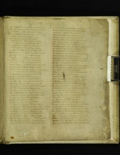þan Iosaphus þe gentyłł þat gynnes couth many
wroght a wonderfułł wyle when þair water fayled
716 (HL 791)Made wedes of welle in wete forto plunge
water wasched als þai war & on þe wall hungen
?? wedes droppen doun dryen ӡerne
Reke ryses þer fra Romayns behaledes
720 (HL 795)wende wel? ???? wedes waschenn had bene
þat no wy in þe wone water sulde tharue
Bot waspasyan ?? wyle of þe wer knewen
???de laghes þarat & lordynges byddes
724 (HL 799)Ne beryn b?? bayste þof þai ӡon boste make
It bene bot ????? in war for waterþaimwantes
þan was ??????? ??? ??? newe to begyn
Assayles ?? ???? ? halfe þe Cite abouten
728 (HL 803)Marke?? ??? ???????s vnmete dyntes
And m?c? ?? ??son note marryde þat tyme
þarof was Iosephus war þat mych of wer couth
And seke? on þe wałł syde was sett with chafe
732 (HL 807)Agayne þe strenght of þe strake þar stanes hyttyn
þat ??? ???ed noght a dyce bot dynn made
?? Romayns rynen to & apon roddes knytt
Sythes for þe sakkes þat selly war kene
736 (HL 811)Raghten to ropis & rent þaim in sonder
þat ałł ???chy ? doune & to þe dyche fallyn
Bot Iosaphus þe gynfułł þair gynnes ałł
Bryntt with ???nnand oyle myche bale wroght
740 (HL 815)waspasy?? wounded was wonderly sore
Thurgh þe ????? of þe hele witha handedarte
Sone assembled hym to many sad hundretħ
þat walde wreke þe wounde or elles wo hab
744 (HL 821)þat brayed þan to þe byker fułł ӡerne
Faght in fel?? funed with speres
Iu?kyn Iues thur?h ?innys witħ
þer war selcouth signes als seges may here
748 (HL 826)A beryn with a balgh stane was þe brayne clouyn
A woman b??den with berne was on þe bely hitt
with a stane ?? ? stayre als þe story tełł
þat þe ????? ??? ??yd? fra þe body clene
752 (HL 832)Borne vp als ? ??łł ouer?? burgh walles
Bernys war ????? to ????? ? ałłso brytyned
wymen wyde ???? w???? ??er þe stones
Many turret doune ttirled þe temple aboute
756 (HL 837)þe Cite had bene cesed be saynte at þat tyme
Ne had þe folke bene so fers þat þe fende seruyd
þat kyldyn on cristen & kep?d þe walles
with arowes & alblasters & aschelers grete
760 (HL 841)with speres & spryngaldes spynen oute faste
Drywenn dartes doune gyfen depe woundes
þat many oute of Rome be restynge of son
was mykyłł leuer a leche & layke with hys toles
764 (HL 845)waspasyan styntes of þe stoure & strenghtes his men
þat war forbetyn & bledde vnder bryght ????
Tyght is þaire tentis with tene þat þai had
wonder wery of þair werke & wreched bothe
768 (HL 849)Helmes & hauberkes þai haden of sone
wasches þair woundes with wyne & with wołł stoppes
with wołł & with oryson orday?? in charme
Sythen iche sege to þe soper ӡoden
772 (HL 854)þof þai wounded war þai no wounde mened
Bot daunsynge & no dole with dynnyng of pypes
And nakyr noyse ałł þe nyghttyme
when þe nyght was done & þe daye sprongen
776 (HL 858)Sone after þ?? ??? assembled þe grete
Come forthe ???? ?? kynge counseyle to here
Ałł þe knyghthede clene þat for criste waryd
waspasyan on wyde his wyes behelde
780 (HL 862)þat war frescher to fight þan at þe firste tyme
He prayes princes firste & ałł þe pepiłł after
þat ich a wyght of þe were sulde his wiłł schew
Or þis toune be tane and þere toures hegh
784 (HL 866)Myche torfer and tene vs tydes on hande
þai turne ałł to Tytus & hym þer tale graunted
Of þe Cite & þe sege to say for þaim ałł
þan Titus hym turned & talkyn begynne
788 (HL 870)þus to layke with þer ledes ne lympes þe worse
For þai er fełł men of defence fers men & nobiłł
& þis turred toune es tenefull to wyn
þe werste wreche in þe w?ne may on þe wałł
792 (HL 874)Stryke doune with a stone stuny many knyghtes
wende we sałł on roume & behalde & harme lytiłł
þat þai may fare no ferther fode forto gete
wald ӡe stynt of ӡoure stryfe whyle þai þe stoure ma???
796 (HL 879)we sulde with hunger þaim hent & hoke oute of toune
For þare as fayles þe fode feble es þe strengħt
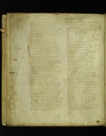And þare þare hungre es hote hertes er faynte
Ałł assentyd tiłł his saw þat þe sege harde
800 (HL 885)To þe kynge war calde constables þan
He scharged þaim for ałł chaunce als a chyftan sulde
with wache & with welyd men þe wall forto kepe
For we wiłł hunte at þe hertes in hethis aboute
804 (HL 890)And se þese rose rynen in þe roghe bankes
Ryde to ryuer rayse vp fowles
Iche sege to þe solace þat hym lykes
Prynces oute of pauylyons praysyd þai wer
808 (HL 895.1)?????? forth ouerþat place & þaimplaye wolde
þat lyfe led þai longe oure lorde gyf vs ioye
Passus
Five
IN Rome Nero has now myche noye wroght
To dede pyned þe pope & myche pepiłł quelled
812 (HL 899)Petre of apostels þe prince & saynt Paule bothe
Senek & senatours of þe Cite free
His moder & his mylde wyfe muchyd to dede
Comberd cristen fele þat on criste lyued
816 (HL 903)þe romayns rysyn on one when þai þis reuth sene
To quełł þe Emperoure quyke þat þaim vnquemed had
þai presen to þe palace poueryl and other
To brytten þe bolde kynge in his burgh ryche
820 (HL 907)þe Cite & þe senatours assentes þaim bathe
No nother dede es to do þan haf his dome ӡoledyn
þan fled þe freke vnfrendeles oute
At a priue postern & ałł þe pople sewes
824 (HL 911)Bot a tronchoun of a tree toke he no more
Of ałł þe gleterand golde þat he on erthe had
with his toth on þe tronchoun he togges & bytes
Till it was pyked at þe poynte als pryk ende
828 (HL 915)þan he byden þe berynes & baldely he spekes
Tiłł ałł þe wyes þat þar war wordes on loude
Turnes traytours aӡayne sałł neuer þe worde ryse
þat na carle make his cope þat he his kynge quellyd
832 (HL 919)Hymselfe he styked with þat staf strake to þe hert
þat þe colke gon clene and þe kynge dyed
Sex monethes after & no more þis myschefe betyd
þat waspasyan was went to wer on þe Iues
836 (HL 923)Foure metenn myle oute of rome to mene foreuer
þat firste was emperoure of ałł þus ended in sorow
þe grete togeder er gone getes þaim another
One Gabba a gome þat myche grem had
840 (HL 927)Thurgh oth?? Luscius a lorde þat had hym lange hatyd
And at þe laste þe lede hym on lyfe broght
In myddes þe markett of Rome þai metyn in fere
Othes felde hym faye & gaf hym fele woundes
844 (HL 931)þat foure of monethes & more had mayntend þe ???une
þan dyed þat duke and dyademe leu??
when þat gabba was gone & oute ??me broght
Othes entres In and Emperoure was maked
848 (HL 935)þat man in his magiste was monethes bot thre
And ӡelde Sathanas þe saule & hymself quelled
þe Romayns raysen a renke Rome forto kepe
A knyght þat vytale was called & hym þe croune raght
852 (HL 939)Bot syr sabyn soght a sege þat was noble
waspasyan brother þat he betrayde had
waspasyan aponn vytale to venge his brother
Sent oute of Surry seges to Rome
856 (HL 943)Als nakyd als nedyłł þe new Emperoure
For Syr sabyn sake ałł þe Cite was drawen
Sithen gorred þe gome þat his guttes ałł
Als a bowelde beste into his breche hange
860 (HL 947)Doune heledand he ӡede & ӡeledes þe saule
And þai caght þe cors & keste it in tybre
Seuen monethes had þat sege septer in hande
& þan lefte þe lyfe for his lyther dedes
864 (HL 951)Another sege was to seche þe septer sulde hafe
For ałł þere bene gone þat neuer aӡayne turned
Now of þe Cite and ӡe wiłł þat I saye more
How þis comly kynge þat for criste weres
868 (HL 955)Has haledyn in þe haythen other halfe ӡere
þat neuer berynn oute of þe burgh so balde was to pas
Als he to dyner on a daye with dukes was sett
þare come renkes fra Rome raykande swythe
872 (HL 959)In brynyes & bright wede with bodworde new
Lowten ałł to þe lorde lettres hym raght
Sayde comly kynge þe knyghthede of Rome
Thurgh þe senatours assent & þe Cite als
876 (HL 963)Has chosen þe for chyftane to be oure chefe lorde
þe riche Emperoure of Rome redes þere lettres
He ouerlokes eueriche a lyne to þe laste ende
Bordes war borne ałł doune & þe bernys rysed
880 (HL 968)Calles þaim on one & kythes þe speche
ӡe bene of my blode þat I beste trayste
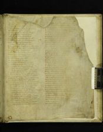My ??? here next to my ????? ? ?ther syb many
S?r sabyn of Surry a sege þat I ???te
884 (HL 972)??? other frendes fele þat me fayth ???
Now es me bodworde of blysse broght fro Rome
Syr sabyn of Surry saye þe behoues
How I myght safe myselfe & I so wroght
888 (HL 977)For I hafe ???ly hyght here forto lenge
To ?? ????? ??? ӡett & ӡoledenn þe keyes
??? ? ??? ???red toune hafe takyn at wiłł
And sy???n venged on þaim þat þe holde kepes
892 (HL 981)Betyn & brayde doune þe bretage hye
þat neuer stone in stede stande apon other
Kythe þi counseyle sir knyght þe kynge to hym sayde
For I wiłł wirke be þi witt if worship may be
896 (HL 985)þan says syr sabyn semelyche lorde
we be wyes þe with þi worship to forther
And þat we do es þi dede may naman deme elles
þe dome demed was þore þat who dole be be another
900 (HL 990)He sałł be sufferayne hymselfe sene in þe werke
For als faye es þe freke at þe fyre ende
þat ?f flaes þe fełł als he þat fote haldes
Betake Titus þi sonn þis toune forto kepe
904 (HL 994)& to þe dughty duke domyciann his brother
Here I halde vp my hande with þaim forto lenge
with ałł þe here þat I hafe whils my hert lastes
And þou sałł ryde to Rome receyue þer þi croune
908 (HL 998)In honour Emperoure to be to þi lyfes ende
So may þe couanute be keped þat þou to criste made
þiselfe dose þat þi soudeours bi þine assent wirkes
þan with a lyons late he lyfte vp his eghen
912 (HL 1002)?o Titus turnes hym on one & hym þe tale schewen
And as sir sabyn has sayde be it sone graunted
with his brother & þe beryn þat hym blysse walde
? ??łł tary at þis toune tiłł I it takyn hafe
916 (HL 1006)??de wayes thurghe þe walles with waynes & kartes
??re fader hete to halde if me hap tyde
?? ???e tohewen be or I hythen pas
? ??ke and a brade schelde was broght on to swere
920 (HL 1010)???? beryens þan handes helde & boldely to kyssyn
To be lele to þat lorde þat þaim lede sulde
Syr Titus þe trew kynge to þai þe toune had
????? als þe foule of þe daye was þe freke þen
924 (HL 1014)??????? knyghtes ??? withcarefułł ????es
?? ??łł & my worship ӡe wolden to kepe
For þe tresoure of ?? ????? ?? þys toune hang??
I ne walde þe toures war vntane & þis toune he??
928 (HL 1018)For ałł þe golde and þe gode ????? ??? ?????
Ne no stone in þe stede st??????? on lofte
Bot ałł ouerturned ???ed ?????? ? ?????
So laches he leue at his ledes ałł
932 (HL 1022)went wepand awaye & on þe wall lo???
Prayes god als he gaf hym grace to sende
To halde þat þai heght h??? ? neuerþair hert ch?????
Now es waspasi?? ???? ???? ?? ???? ???????
936 (HL 1026)Euen entred to Rome & E???????? ?????
And titus for þe tytynges ?? ????? ???? ???
þat in his syns a sekenes so?????? ?? ?????
þe freke for þe fantom of his fader ?????
940 (HL 1030)with a crampe & a calde kankers fułł harde
þat þe fystes & þe fete fyngers and other
wex laythly als a leke & loste had þe strengthe
He crokyd agayne kynde & als a crepiłł ?????
944 (HL 1034)when þai se hym so many sege ?????
þai sent to þe Cite & sog??? a leche
þat couth kepe þe kynge ? ?????? delyuer
when þai ?? þe Cite hafe ???? withse??? aboute
948 (HL 1038)Fynd couth þai no freke þat of þe fete couthe
Saue þe selfe Iosaphus þe freke þat was noble
& he graunted to ga with a gode wiłł
when he was comen to þe kynge & þe case wyste
952 (HL 1042)why þe sege so sodanly ?? ?????? was fallen
To he had complet his ???? ???? he ask??
For what beryn of þe burghe þat he b???ge walde
þe kynge was glad & ałł graunted þat þe gome askyd
956 (HL 1046)And he foundes before & serchys belyue
A man to þe mody kynge þat he moste hated
And in brynges þat beryn to his bed syde
when titus sodanly se þat sight? with eghen
960 (HL 1050)In his hert? a hote ire so hertly ryses
þe blode began withhete to brede inhis ??????
And syrours to resorte in þair selfe kynde
Fete & ałł fetours als þai befor ?????
964 (HL 1054)Comen in þair aghen kynde ? þe kynge ryses
Thankes god of his grace & þe gode leche
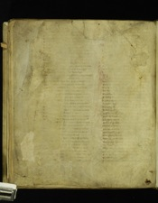line illegible
line illegible
968 (HL 1058)line illegible
line illegible
line illegible
line illegible
972 (HL 1062)??? ??????? ??? ???? ?? ?? ????? ??? lyked
line illegible
line illegible
line illegible
976 (HL 1066)???? ?????? ?? ?? ???? & kepys no ????
?????? ????? ?? ???? þaire tene es on hande
??? ???? ?????? ??? ???? þat þaimes bylempyd
??? ?? ?? ???? ?? ?? ???? ???? to forto saye
980 (HL 1070)???? ????? & myschef for mete es befallen
??? ?????? ????? ????? ??? na fode had
?????? ????? ?? flesche freke forto bye
???? ?????? ?? ?????? þat þa? by couthe
984 (HL 1074)????? ?? ??? ?? dr???? ??? ???? of ??? ???fe
???? ??????? ? ?????? ???????? þa? et??
?????? ???? ??? ??????? faste to þe grounde
???? ??? ? ???????? iche daye many ?
988 (HL 1079)?? ?????? ????? ?? wolues þai ferde
?? ????? ?????? ?? ?? ??yke ałł his wombefiłł
?? ???? ? ??lde wyfe for myschefe of fode
??? ???? ???? ??? sho ???? brynt? it on glades
992 (HL 1083)????? ???? ??? ??? withre???? ?o????
???? ???? ???? ???? ??de our sor?? ?? ?? hande
?????? ?????? ?? burgħ oure bodys to quełł
?????? ?????? ?? ???? þat oure hertes brestes
996 (HL 1087)??????? ???? ??? ? ?? ?af & aӡayne turne
????? ??? ??? out ??? ??? etyn a sholdyr
?? ???? ?????? ?? ???? ?y?es inþe strete
??? ???? ??????? ????? ????? þe sauer
1000 (HL 1091)???? ??? ??????? ?? ???? sayd sho dy sulde
??? ???? ?? ???? ??????? ????? fra þa men layned
??? ????? ???? ????? ??? in a wode ??ng??
?? ??/ ???? ???? ?? ???ttnyd & þe ????? ??????
1004 (HL 1095)??? ???? ? ????? ??? ??? ??? a syde ??t????
?? ?? ???? ??? ?? bo?? ?? ???? ??? blo?? ch??ng?d
???? ??? ???? for ?? ??????? ????
??? ???? ???? ?? ??? ??? ??? ????? sałł we ????
1008 (HL 1099)line illegible
line illegible
line illegible
line illegible
1012 (HL 1103)line illegible
line illegible
line illegible
line illegible
1016 (HL 1107)line illegible
line illegible
line illegible
line illegible
1020 (HL 1111)line illegible
line illegible
Passus
Six
N. . .
line illegible
1024 (HL 1116)vp a . . .
Fyue . . .
Ane . . .
Had wr. . .
1028 (HL 1120)Titus t. . .
Shaftes s. . .
&many thur. . .
Brynies & bry. . .
1032 (HL 1124)And many b. . .
Hewen apon h. . .
þe fyre out fl. . .
þe duke domic. . .
1036 (HL 1130)And hyes oute of . . .
Felled of þe fals f. . .
Als bestes b. . .
þan titus towa. . .
1040 (HL 1134)Mas mason . . .
After profer þaim. . .
when he ??? of þ. . .
Bot ӡone þ? gy. . .
1044 (HL 1138)An? ?not. . .
Say. . .
þan . . .
S. . .
1048 (HL 1142)Myght . . .
Fo. . .